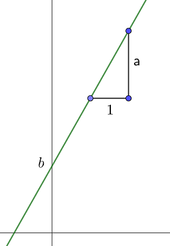
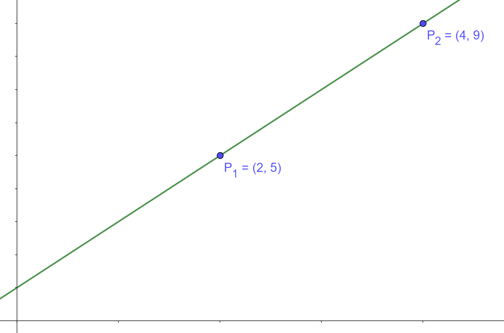
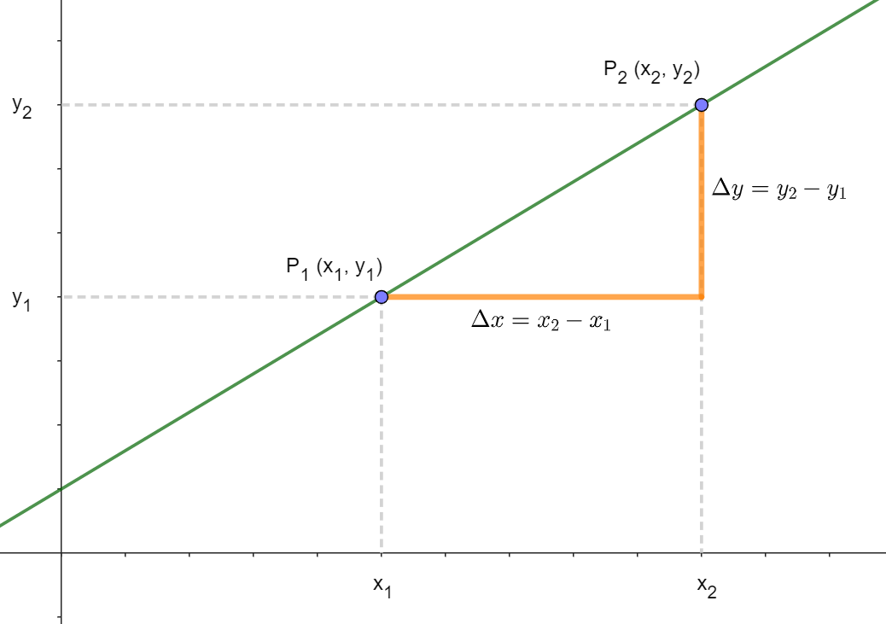
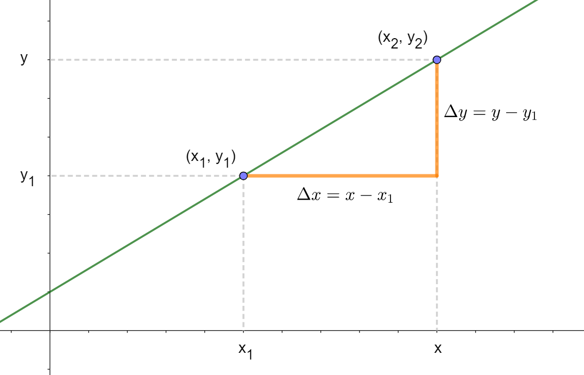

Lineære funksjoner#
Definisjon av lineære funksjoner
Alle lineære funksjoner kan skrives på formen \(f(x) =ax+b\) der \(a,b\in\mathbf{R}\). Siden funksjonsverdien vises langs \(y\)-aksen vil dere også ofte møte på formen \(y = ax+b\).
Tallet \(a\) kalles stigningstallet. Det viser hvor mye \(f(x)\) øker eller minker med når \(x\) øker med 1.
Tallet \(b\) kalles konstantleddet. Det viser \(y\)-verdien til skjæringspunktet med \(y\)-aksen.

Alternativ form for rett linje
Siden ledd kan flyttes til andre side av likhetstegnet og ei likning kan multipliseres med det samme på begge sider av likhetstegnet, så kan dere møte på følgende form av ei rett linje:
\(ax+by=c\)
Da vil \(a\) og \(b\) ikke være stigningstall og konstantledd.
Oppgave
Finn stigningstall og konstantledd for linjene gitt ved:
Løsningsforslag
\(f(x)\) har stignignstall 2 og konstantledd lik 3.
\(g(x)\) har stigningstall lik \(-\frac{1}{3}\) og konstantledd lik -2.
Finne funksjonsuttrykket til en lineær funksjon#
For å finne funksjonsuttrykket for ei rett linje trenger vi å vite to størrelser:
stigningstallet a
konstantleddet b
For å finne disse to trenger vi å kjenne to punkt på linja. Har vi det, kan vi enten tegne linja og lese av, eller vi kan regne oss fram til svaret. Hva som er enklest kommer an på tallene. Først ser vi på et enkelt eksempel for å illustrere hvordan vi kan tenke.
Eksempel lineær funksjon
En lineær funksjon går gjennom punktene \(P_1 (2,5)\) og \(P_2 (4,9)\). Vi skal finne funksjonsuttrykket og starter med å tegne opp punktene i et koordinatsystem og trekke linja gjennom dem.

Så skal vi finne stigningstallet. Vi vet at stigninstallet er økningen i \(y\) når \(x\) øker med 1. Her ser vi at når \(x\) går fra 2 til 4, så går \(y\) fra 5 til 9. En økning på 2 i \(x\) gir altså en økning på 4 i \(y\). Stigningstallet må derfor være \(\frac{4}{2}=2\).
For å finne konstantleddet må vi finne skjæringen med \(y\)-aksen. Da går vi to bakover langs \(x\)-aksen og må derfor gå 4 nedover langs \(y\)-aksen (to stigningstall). Konstantleddet blir 1.
Funksjonsuttrykket blir derfor \(f(x)=2x+1\).
Vi skal nå formalisere eksempelet over til en framgangsmåte vi kan bruke når vi har gitt to punkt på ei rett linje. Først finner vi stigningstallet.
Stigningstall
Om vi kjenner to punkt, \(P_1\) og \(P_2\), på ei rett linje, så kan vi finne stigningstallet ved å regne ut endringen langs \(y\)-aksen (\(\Delta y\)) delt på endringen langs \(x\)-aksen (\(\Delta x\)).

Når vi har funnet stigningstallet til linja må vi ta utgangspunkt i et av punktene og gå «bakover» for å finne konstantleddet.
Konstantledd
Vi tar utgangspunkt i punktet \(P_1 (x_1, y_1)\) og stigningstallet \(a\). For å komme til \(y\)-aksen må vi gå \(x_1\) bakover. Da vil \(y\) endre seg fra \(y_1\) med \(ax_1\) slik at konstantleddet blir:
Setter vi sammen resultatet fra stigningstallet og konstantleddet, så har vi funksjonsuttrykket for den rette linja.
Vi kan også finne uttrykket direkte fra den såkalte ettpunktsformelen.
Ettpunktsformelen
Vi kjenner puntket \((x_1, y_1)\) og stigningstallet \(a\) på ei rett linje. Ved å velge et tilfeldig (ukjent) punkt \((x,y)\) på den rette linja og bruke formelen for stigningstallet får vi

Hvis vi multipliserer med \((x-x_1)\) på begge sider av likhetstegnet, så får vi ettpunktsformelen.
Oppgave
a) Finn funksjonsuttrykket for ei rett linje som går gjennom \((3, 2)\) og \((5, 10)\).
b) Undersøk om punktet \((-1, -6)\) ligger på linja.
c) Finn nullpunktet til funksjonen.
Løsningsforslag
a) Finner først stigningstallet ved
Bruker så ettpunktsformelen med punktet \((3,2)\)
som når vi ganger ut parentesen og flytter over -3 gir
b) Setter inn -1 for \(x\) i likninga for linja.
Det betyr at \((-1, -6)\) ligger på linja.
c) Nullpunktet er der \(y=0\). Løser derfor likninga
som gir at nullpunktet er for \(x=2\).